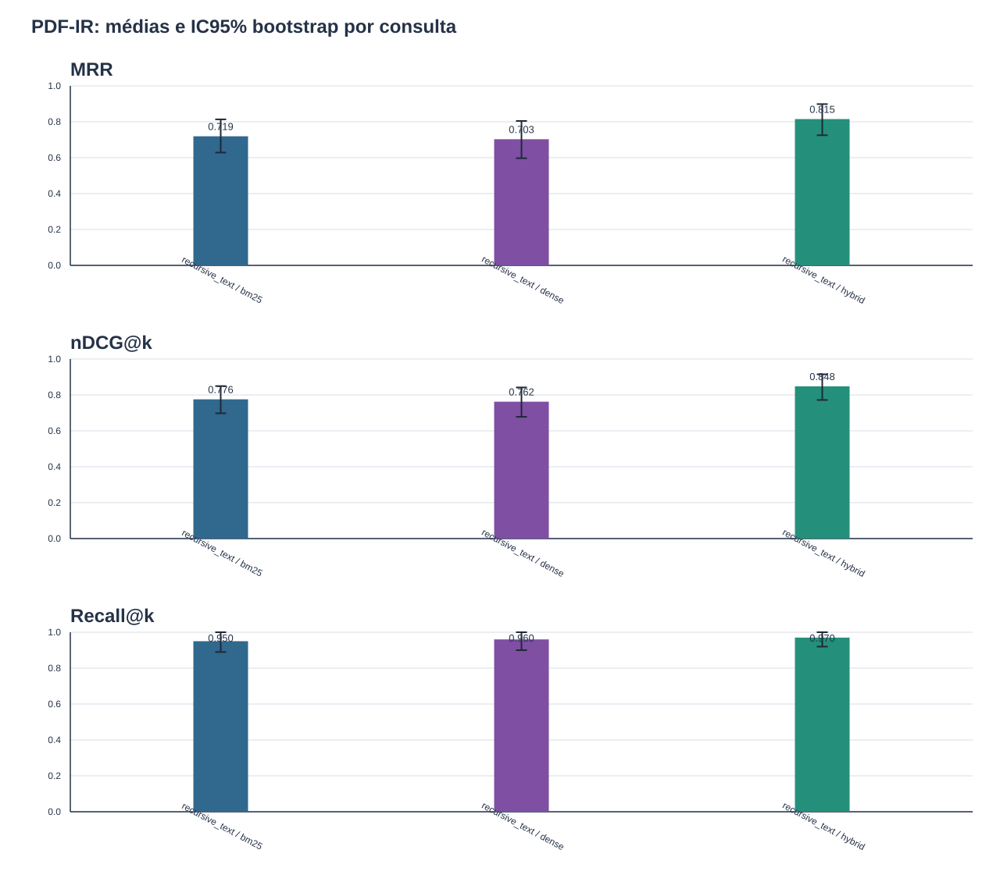

Intervalos obtidos por bootstrap de consultas dentro de cada condição.

| chunking_strategy | method | metric | queries | mean | ci95_low | ci95_high | bootstrap_repetitions | bootstrap_seed |
|---|---|---|---|---|---|---|---|---|
| recursive_text | bm25 | mrr | 50 | 0.719079 | 0.628524 | 0.813333 | 2000 | 42 |
| recursive_text | bm25 | ndcg_at_k | 50 | 0.775606 | 0.69783 | 0.84947 | 2000 | 42 |
| recursive_text | bm25 | recall_at_k | 50 | 0.95 | 0.89 | 1.0 | 2000 | 42 |
| recursive_text | dense | mrr | 50 | 0.702722 | 0.597056 | 0.804444 | 2000 | 42 |
| recursive_text | dense | ndcg_at_k | 50 | 0.762498 | 0.678114 | 0.841804 | 2000 | 42 |
| recursive_text | dense | recall_at_k | 50 | 0.96 | 0.9 | 1.0 | 2000 | 42 |
| recursive_text | hybrid | mrr | 50 | 0.815 | 0.725 | 0.898333 | 2000 | 42 |
| recursive_text | hybrid | ndcg_at_k | 50 | 0.847974 | 0.771961 | 0.91513 | 2000 | 42 |
| recursive_text | hybrid | recall_at_k | 50 | 0.97 | 0.92 | 1.0 | 2000 | 42 |
| chunking_strategy | left_method | right_method | metric | queries | mean_difference_left_minus_right | ci95_low | ci95_high | left_wins | ties | right_wins | mcnemar_exact_p | bootstrap_repetitions | bootstrap_seed | mcnemar_holm_p |
|---|---|---|---|---|---|---|---|---|---|---|---|---|---|---|
| recursive_text | bm25 | dense | hit_rate_at_k | 50 | 0.0 | -0.06 | 0.06 | 1 | 48 | 1 | 1.0 | 2000 | 42 | 1.0 |
| recursive_text | bm25 | dense | mrr | 50 | 0.016357 | -0.108333 | 0.136667 | 16 | 21 | 13 | None | 2000 | 42 | None |
| recursive_text | bm25 | dense | ndcg_at_k | 50 | 0.013108 | -0.087559 | 0.108047 | 17 | 19 | 14 | None | 2000 | 42 | None |
| recursive_text | bm25 | dense | recall_at_k | 50 | -0.01 | -0.07 | 0.05 | 1 | 47 | 2 | None | 2000 | 42 | None |
| recursive_text | bm25 | hybrid | hit_rate_at_k | 50 | -0.02 | -0.06 | 0.0 | 0 | 49 | 1 | 1.0 | 2000 | 42 | 1.0 |
| recursive_text | bm25 | hybrid | mrr | 50 | -0.095921 | -0.177032 | -0.021365 | 5 | 33 | 12 | None | 2000 | 42 | None |
| recursive_text | bm25 | hybrid | ndcg_at_k | 50 | -0.072368 | -0.138185 | -0.013408 | 5 | 32 | 13 | None | 2000 | 42 | None |
| recursive_text | bm25 | hybrid | recall_at_k | 50 | -0.02 | -0.08 | 0.0 | 0 | 49 | 1 | None | 2000 | 42 | None |
| recursive_text | dense | hybrid | hit_rate_at_k | 50 | -0.02 | -0.06 | 0.0 | 0 | 49 | 1 | 1.0 | 2000 | 42 | 1.0 |
| recursive_text | dense | hybrid | mrr | 50 | -0.112278 | -0.194111 | -0.036333 | 4 | 29 | 17 | None | 2000 | 42 | None |
| recursive_text | dense | hybrid | ndcg_at_k | 50 | -0.085476 | -0.15177 | -0.027123 | 7 | 25 | 18 | None | 2000 | 42 | None |
| recursive_text | dense | hybrid | recall_at_k | 50 | -0.01 | -0.06 | 0.03 | 1 | 48 | 1 | None | 2000 | 42 | None |
Sem comparacoes.